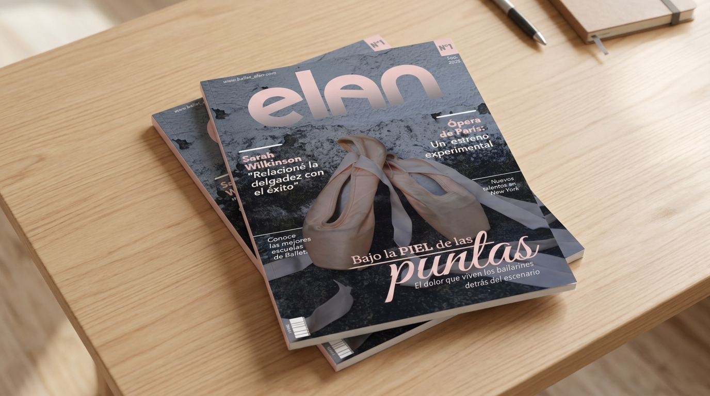
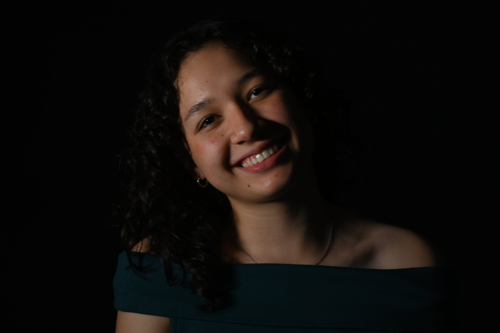
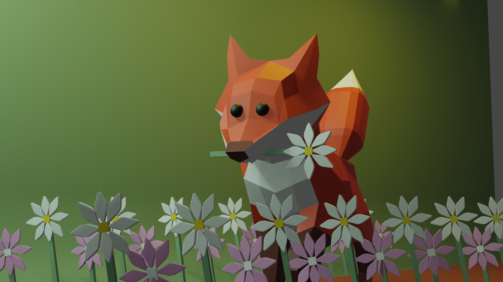
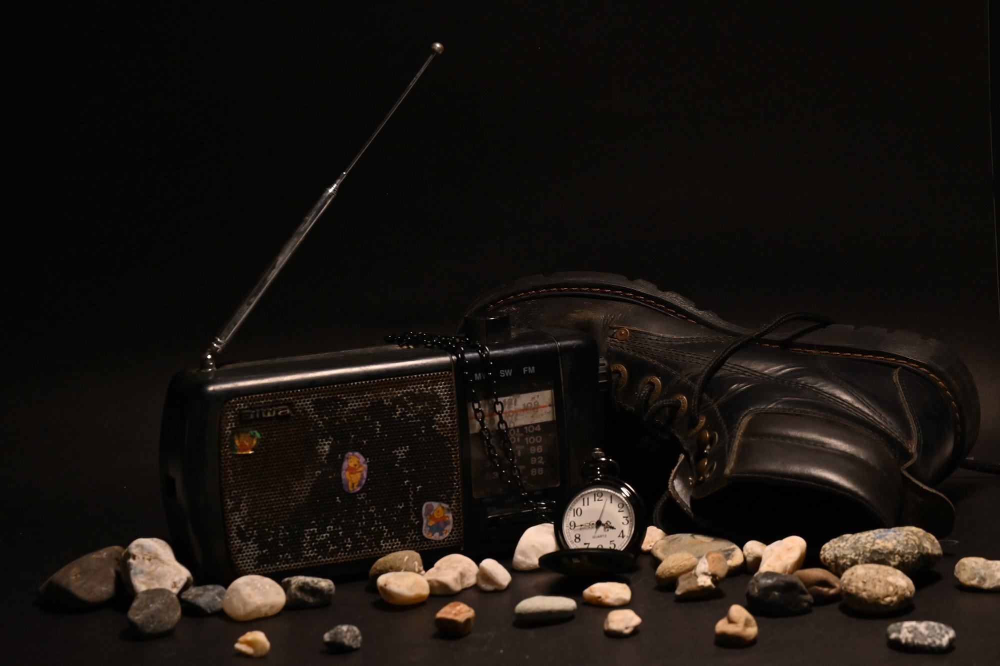
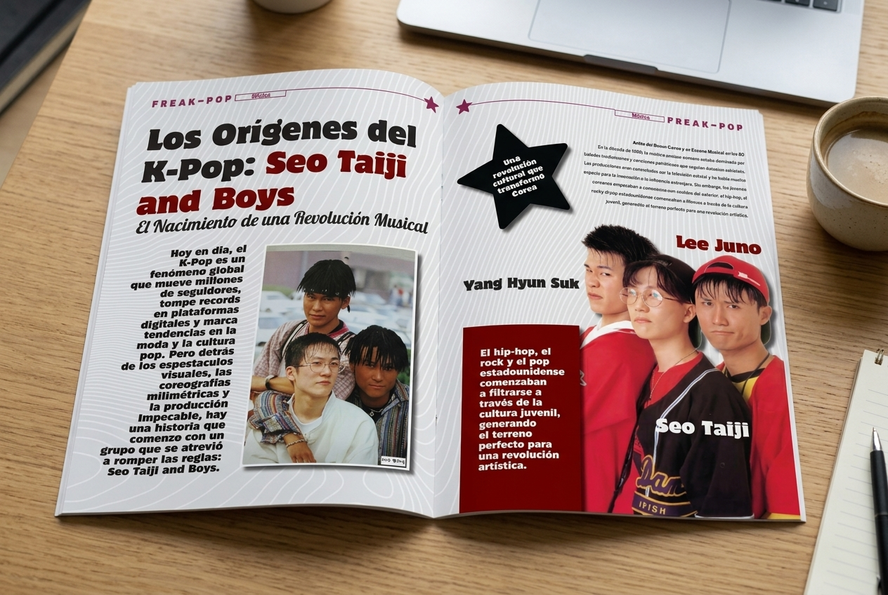
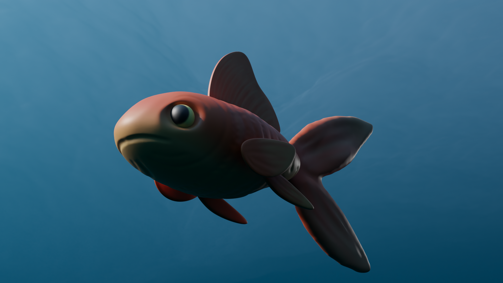

Editorial
Revista Elan
Elan es una revista alternativa que busca mostrar todas las caras del Ballet.
Año: 2025
PORTAFOLIO · 2026
Soy Juliana Herrera, estudiante de Diseño de la Comunicación Gráfica. Creo identidades, piezas editoriales y experiencias digitales que cuentan historias con intención.
Ver mi trabajo
Estudio Diseño de la Comunicación Gráfica en la Universidad Autónoma de Occidente. Me mueve el diseño que tiene algo que decir: el que parte de una pregunta real, se investiga, se boceta y se prueba hasta que comunica. En cada proyecto busco lo mismo: que la forma y el mensaje vayan de la mano.

Editorial
Elan es una revista alternativa que busca mostrar todas las caras del Ballet.
Año: 2025

Imagen Tridimensional
Un zorro lowpoly mostrando el uso de materiales y luces dentro de un escenario 3D.
Año: 2025

Fotografía
Bodegón industrial enfocado en el volumen entre una radio, una bota de trabajo y un reloj con engranajes expuestos.
Año: 2025

Editorial
Artículo de la revista Freak-Pop dirigida a los fans del género musical K-pop, abordando temas de historia, tendencia y lanzamientos.
Año: 2025

Imagen Tridimensional
Modelado de un pez con texturizado a partir del método esculpir.
Año: 2025
AUDIOVISUAL
Entre TrazosAño: 2026